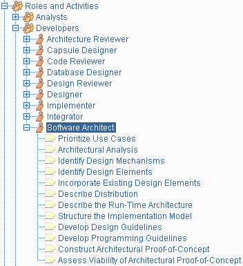

Key Concept: Activity
Roles have activities that define the work they perform. An activity is something that a
role does that provides a meaningful result in the context of the project. See
Activity: Capture a Common
Vocabulary for an example of an activity.

A typical role, showing its activities
in the treebrowser
An activity is a unit of work that an individual playing the described
role may be asked to perform. The activity has a clear
purpose, usually expressed in terms of creating or updating some
artifacts, such as a model, a class, a plan. Every activity is assigned to a
specific role. The granularity of an activity is generally a few hours to a
few days, it usually involves one role, and affects one or only a small number
of artifacts. An activity should be usable as an element of planning and
progress; if it is too small, it will be neglected, and if it is too large,
progress would have to be expressed in terms of an activity’s parts.
Activities may be repeated several times on the same artifact, especially
when going from one iteration to another, refining and expanding the system, by
the same role, but not necessarily the same individual.
Activities are broken down into steps. Steps fall into three main categories:
- Thinking steps: where the individual performing the role understands the nature
of the task, gathers and examines the input artifacts, and formulates the
outcome.
- Performing steps: where the individual performing the
role creates or updates
some artifacts.
- Reviewing steps: where the individual performing the role inspects the results
against some criteria.
Not all steps are necessarily performed each time an activity is invoked, so
they can be expressed in the form of alternate flows.
Example of steps:
The Activity: Find use cases and actors decomposes
into the steps:
- Find actors
- Find use cases
- Describe how actors and use cases interact
- Package use-cases and actors
- Present the use-case model in use-case diagrams
- Develop a survey of the use-case model
- Evaluate your results
The finding part [steps 1 to 3] requires some thinking; the
performing part [steps 4 to 6] involves capturing the result in the use-case
model; the reviewing part [step 7] is where the individual performing the role evaluates the result to
assess completeness, robustness, intelligibility, or other qualities.
Activities may have associated Work Guidelines, which present
techniques and practical advice that is useful to the role performing the activity.
Applicable work guidelines are hyperlinked from the activity description itself.
The Work Guidelines Overview
also summarizes the available set of work guidelines, and is accessible from
the top level of the treebrowser.
Copyright
© 1987 - 2001 Rational Software Corporation
|  Overview >
Overview >
 Key Concepts >
Key Concepts >